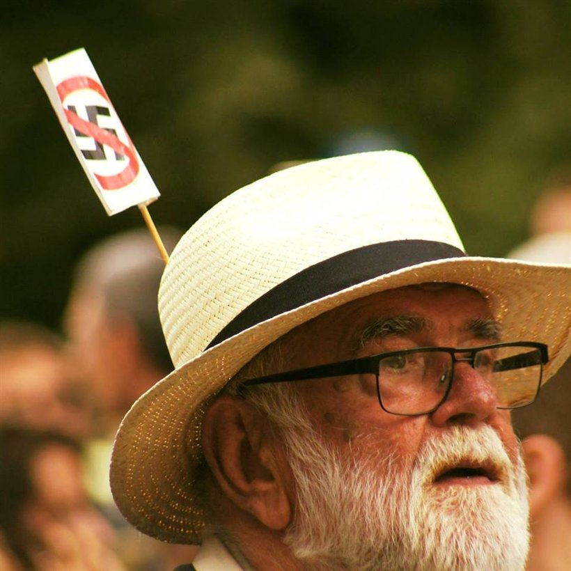
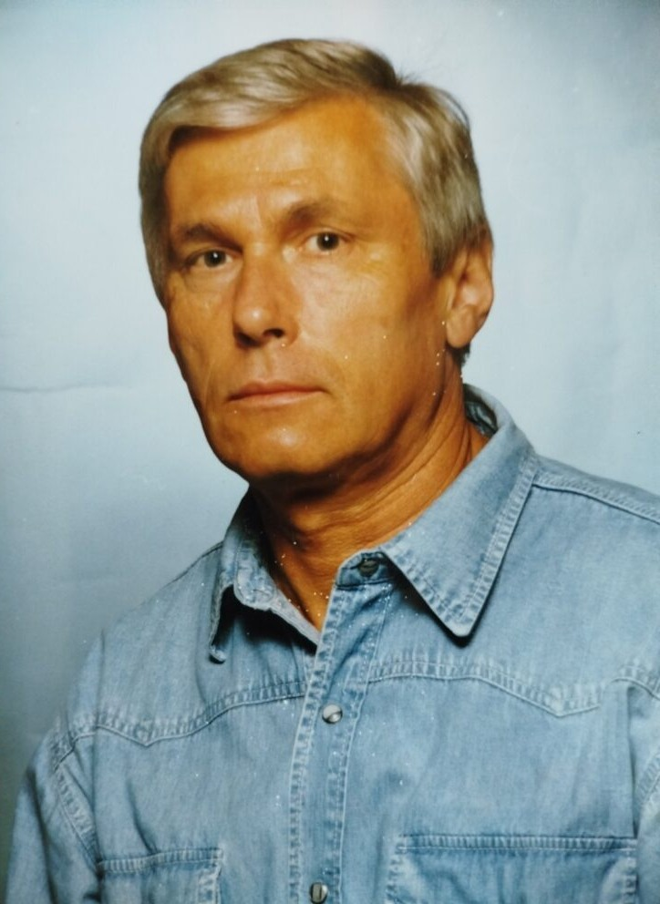
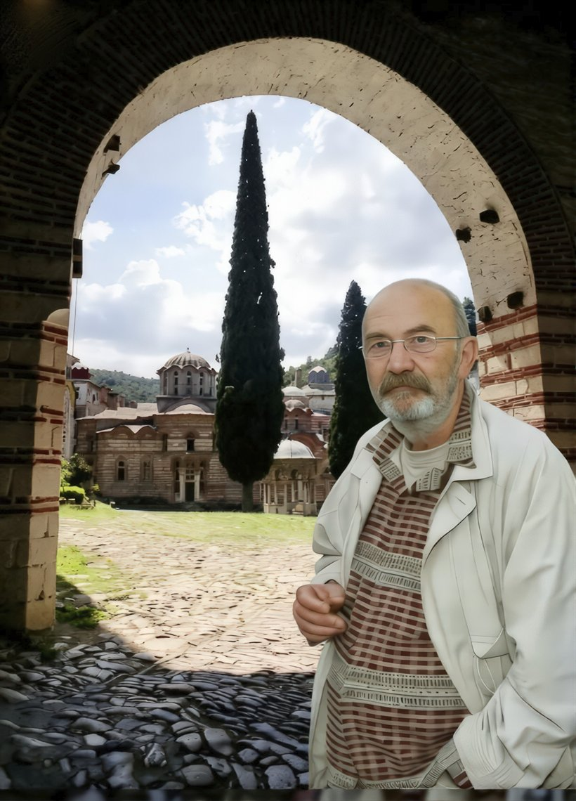
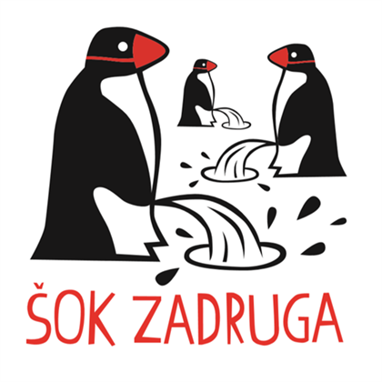
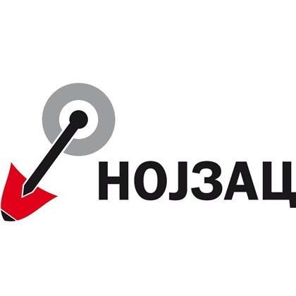
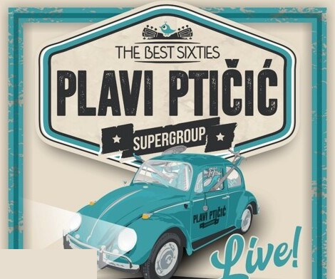
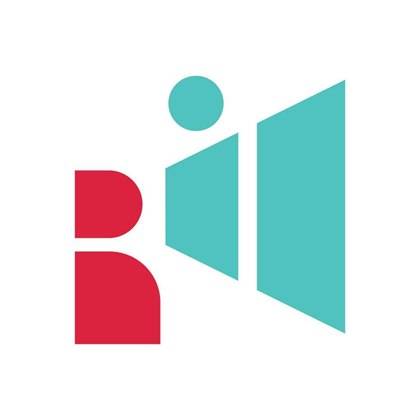
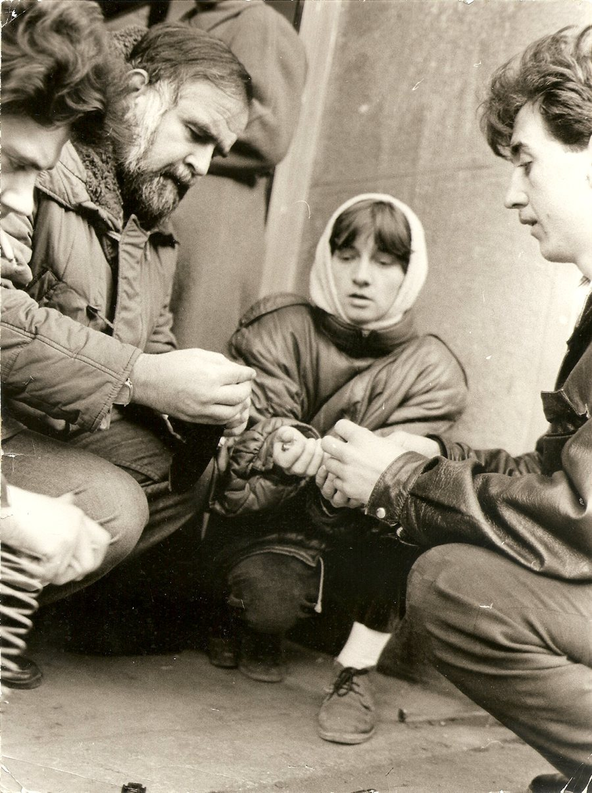
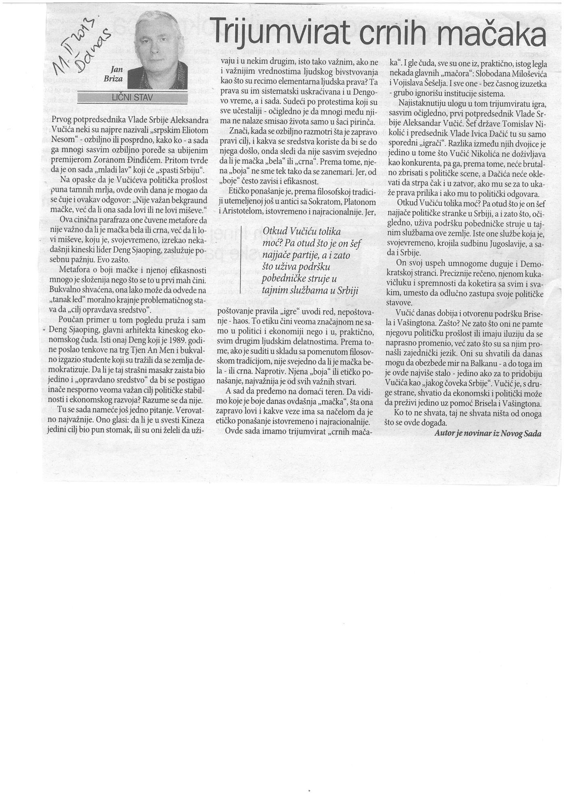
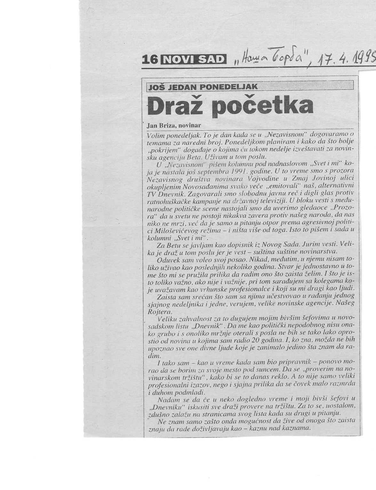

Petar Petrović
novinar, urednik, predsednik NDNV
1946 — 2021
Dvostruki predsednik NDNV i glavni urednik „Dnevnika". Izveštavao je sa ratišta bivše Jugoslavije i iz Rumunije, beskompromisno braneći etičko i nezavisno novinarstvo.
Akcija je uspešno završena 9. juna 2026.
Donatorska akcija za studentske medije
Dar onih koji su se borili, za one koji se danas bore za promene.
0 RSD
za studentske medije
Hvala vam na solidarnosti! Svaka kupljena knjiga, kravata i grafika bila je ulog u budućnost nezavisnog i profesionalnog novinarstva.
Galerija
Trenuci sa kampusa. Knjige, kravate i ljudi koji su (po)vezali generacije.
Kliknite na fotografiju za uvećani prikaz.
Mediji o akciji
Akciju su ispratili novosadski i nacionalni mediji, od najava do izveštaja iz kampusa. Hvala im što su (po)vezivanje generacija učinili vidljivim.
O akciji
Dar onih koji su se borili za promenu društva u kom se govori glasno, istinito i bez straha, za one koji se danas bore za promene.
(Po)vezivanje generacija bila je građansko‑studentska donatorska akcija. Tri novosadske novinarke iznele su na sto lične predmete svojih preminulih supruga — knjige, kravate i druge dragocenosti novinara Petra Petrovića, profesora i novinara Jana Brize i inženjera Jovana Stošića. Građani su ih kupovinom poneli kući, a sav prihod otišao je studentskim medijima.
Predmeti onih koji su decenijama branili slobodnu i istinitu reč postali su podrška mladima koji istu borbu nastavljaju. Jedna nit od starije ka novoj generaciji.
„Vreme je za novo vreme."
U čast trojice Novosađana

novinar, urednik, predsednik NDNV
1946 — 2021
Dvostruki predsednik NDNV i glavni urednik „Dnevnika". Izveštavao je sa ratišta bivše Jugoslavije i iz Rumunije, beskompromisno braneći etičko i nezavisno novinarstvo.

novinar i profesor
1946 — 2014
Četiri decenije spoljnopolitičkog izveštavanja, od Nikaragve i Rumunije do Bliskog istoka. Karijeru je okrunio predajući budućim novinarima na Odseku za medijske studije.

mašinski inženjer
1948 — 2024
Graditelj Novog Sada koji se decenijama borio strukom i znanjem za čestit, uređen i slobodan grad. Vizionar, buntovnik i zaljubljenik u Hilandar.
Čitaonica
Tekstovi koji najbolje govore o ljudima čijim smo predmetima pomogli studentima. Pročitajte ih onako kako su napisani.
Program događaja
Dragocenosti trojice Novosađana: Petra Petrovića, Jana Brize i Jovana Stošića.

Radovi novosadskih umetnika, članova Šok zadruge.

Izbor naslova novosadske izdavačke kuće Nojzac.

Svirao je novosadski bend Plavi Ptičić.

Majice, bedževi i promotivni materijali Blokade INFO.
Šta dalje?
Ovo je bila prva akcija „(Po)vezivanje generacija", ali nit između generacija se ne prekida. Nove donatorske akcije za studentsku borbu tek slede. Najave, datumi i mesta biće objavljeni na našem sajtu i Instagramu. Prati nas da ne propustiš sledeću.
Prati @medijske_studijeLokacija
Akcija je održana kod fontane, između Fakulteta tehničkih nauka (FTN) i Pravnog fakulteta.
Žene koje (po)vezuju
Akciju su pokrenule tri novosadske novinarke, saputnice i čuvarke uspomena na trojicu boraca za slobodnu reč.
Biografija
novinar, urednik, predsednik NDNV, 1946 — 2021
Veliki borac za slobodu medija, istinu i pravdu.
Kolega i prijatelj, borac za etičko i nezavisno novinarstvo. Kao izuzetan novinar i urednik ostavio je neizbrisiv trag u novinarstvu i borbi za medijske slobode.
Petar Petrović rođen je u Varvarinu 18. aprila 1946. godine. Predsednik Nezavisnog društva novinara Vojvodine (NDNV) bio je od 2000. do 2004. godine, u dva mandata. Bio je glavni i odgovorni urednik lista „Dnevnik", takođe u dva mandata. Novinarsko i uredničko znanje i čast s posebnim ponosom i naročitom posvećenošću delio je s kolegama i u listovima „Naša Borba", „Danas" i „Nezavisni građanski list", čiji je urednik bio za vreme velike borbe građanske Vojvodine protiv Miloševićevog režima i ratnohuškačkog govora mržnje u medijima u Srbiji pre i za vreme jugoslovenskog pokolja.
Njegova beskompromisna borba tokom devedesetih za etičko novinarstvo, a nakon pada Miloševićevog režima za podizanje kvaliteta lista „Dnevnik", ostaće večno u pamćenju novinarske zajednice.
Kolege ga pamte kao urednika u pravom smislu te reči — koji je umeo da sasluša novinara, podrži ga i posavetuje. Bio je principijelan i dosledan u odbrani novinarske profesije i štitio je svoje novinare od političkih napada i pritisaka. Petar Petrović je bio uzor mladim novinarima i pamtićemo ga kao velikog borca za slobodu medija, istinu i pravdu.
Biografija
novinar i profesor, 1946 — 2014
Profesionalni put Jana Brize, tokom četiri decenije, kretao se od novosadskog lista „Dnevnik" — u kome je od 1975. bio novinar, a zatim i urednik spoljnopolitičke rubrike — do mesta predavača i nastavnika veština na Odseku za medijske studije Filozofskog fakulteta Univerziteta u Novom Sadu, od 2006. godine.
U međuvremenu bio je slobodni novinar u novosadskom nedeljniku „Nezavisni", novinar u listu „Naša Borba" (Beograd), dopisnik Novinske agencije Beta (Beograd), nemačkog radija Dojče Vele (Keln) i britanskih elektronskih novina Institute for War and Peace Reporting (IWPR) iz Londona, te šef novosadske kancelarije Fonda za humanitarno pravo. Bio je saradnik lista „Danas", povremeno je pisao za sarajevsko „Oslobođenje", beogradske nedeljnike NIN i „Vreme" i zagrebački „Danas". Prevodio je sa engleskog i španskog jezika.
Kao spoljnopolitički novinar i specijalni dopisnik izveštavao je sa ratišta u Nikaragvi (1984), Baršunaste revolucije u Čehoslovačkoj (1988), Decembarske revolucije u Rumuniji (1989) i političkih zbivanja u Evropi (Mađarska, Rumunija, Italija, Španija i Kipar), Severnoj i Srednjoj Americi (SAD, Meksiko i Nikaragva), na Bliskom istoku (Irak, Kuvajt, Sirija, Jordan i Izrael) i u Africi (Zimbabve, Alžir i Libija). Doživljene tragične događaje tokom boravka u Temišvaru u vreme Decembarske revolucije u Rumuniji pretočio je u knjigu „Rumunija: Golgota i spasenje", koju je „Dnevnik" objavio 1990.
Kao politički oponent Slobodanu Miloševiću, godinama je kao kolumnista nedeljnika „Nezavisni" pisao o pogubnosti tadašnje politike; ti tekstovi objedinjeni su u knjizi „Ko će s Miloševićem?" (NDNV, 1996). Knjigu „Prozor" (NDNV, 2008) posvetio je alternativnom TV dnevniku koji je tokom mesec dana 1991. svako veče u 19.30 „emitovan" s prozora NDNV‑a u Zmaj Jovinoj ulici, suprotstavljajući se ratnohuškačkoj propagandi režima na državnoj televiziji.
Rad na Odseku za medijske studije Filozofskog fakulteta doživljavao je kao krunu svoje novinarske karijere, uvek ističući koliko uživa u društvu tog mladog, pametnog i poletnog sveta. Jedan od predmeta koje je predavao budućim novinarima bio je Izveštavanje u kriznim i ratnim uslovima. Uvek je bio ponosan na svoje studente, a uverena sam da bi tako bilo i sada, kada se mnogi od onih koji su studirali na Odseku za medijske studije u Novom Sadu, kao izveštači TV N1, Nove, lista „Danas", Radija 021 i drugih nezavisnih medija, zaista nalaze na prvoj liniji „fronta". Istu borbu časno vode i profesori i saradnici Odseka za medijske studije Filozofskog fakulteta. Deo te borbe čine svakako i akcije sadašnjih studenata sa svih univerziteta u Srbiji, čija je jedna od parola — Vreme je za novo vreme. Ova akcija „Knjige i kravate" samo je simbolični doprinos toj borbi za novo vreme i pomoć studentskim medijima, u ime onih kojih više nema sa nama, a svakako bi bili deo sadašnjih protesta.
— Nina Popov Briza, Novi Sad, 9. juna 2026.
Biografija
mašinski inženjer, 1948 — 2024
Decenije borbe za Novi Sad strukom i znanjem.
Jovan Janje Stošić — u duši i srcu sanjar, vizionar zagledan u budućnost, strastveni slobodar i buntovnik; na javi Novosađanin, inženjer, graditelj. Iz te dve krajnosti, od sna do slobode, vodio je našu zajedničku, društvenu i svoju sopstvenu borbu protiv Miloševićevog režima. Govorio je da ne može da dozvoli da njegova i sva ostala deca odrastaju u ratnohuškačkom, nacionalističkom i korumpiranom društvu. U toj borbi, na protestima i na ulici, proveli smo decenije. Zbog uverenja i stavova otpuštani smo s posla, ne jednom.
Pobedivši režim koji je sejao smrt i glad, preživevši inflaciju, ratove i bombardovanje, zdušno je svakodnevno praktikovao sva svoja inženjerska znanja stečena na Mašinskom fakultetu u Novom Sadu. Tokom radnog veka u Zavodu za izgradnju grada i u Vodovodu pokazao je organizacione i upravljačke sposobnosti i strukom doprineo razvoju Novog Sada. Borio se da Novi Sad bude grad u kojem se gradi samo uz dozvole, čestito i planski; da bude dovoljno vode i da bude ispravna; da grad bude uređen i čist, da se zelenilo sadi, a ne uništava.
Otac Jovan, kako su ga zvale kolege, bio je strasni zaljubljenik u Hilandar. Često je tamo odlazio i pomagao obnovu manastira, i pre i posle požara. A pre svega, bio je nežni, brižni otac dva sina i deda troje unuka — voljeni suprug jedne „novinarčice", kako mi je iz milošte govorio.
Jovan bi bio ponosan na današnje studente, posebno mašinstva, koji se bespoštedno bore za pravila i ugled struke. Uverena sam da bi želeo da njegove omiljene kravate i knjige, kroz ovu akciju, podrže hrabru borbu studenata koji — pobeđuju. Do pobede!
— Roža Luko Stošić, novinarka, Novi Sad, 3. juna 2026.
Petar Petrović, Autonomija, 31. januar 2020.

Tri decenije nije kratko vreme da se dogodi ona fiziološka neminovnost pa da pamet, mudrost, znanje, hrabrost… stignu iz digestivnog trakta u glavu. Na žalost, to se nama nije dogodilo — već smo nastavili da tavorimo na dnu svih lestvica: od BDP‑a, školskog znanja, standarda, medijskih sloboda…
Nismo ni na korak od istočnih komšija koji su platu doterali do 900 evra, naspram naše polovine tog iznosa. Ovde narod kaže „biće bolje kada na vrbi rodi grožđe". I nikako da se to dogodi — na ulici ili u skupštini, u opljačkanim fabrikama i gradovima, školama s hologramima i bez toaleta, megalopolisima na vodi, gradovima s arsenom iz česme… I Rumuni imaju svoju frazu na grožđane vrbe — „desiće se kada na topoli rode kruške". I rodile su, veoma bogato.
Nekako krajem decembra pre 30 godina našli smo se na putu između naše granice i Temišvara. Skoro prazan drum, dug i ravan, opkoljen drvoredima topola okićenih kruškama. Odmah se videlo da je jesen u Banatu bila bogata — bogata tvrdom namerom da se dočepaju delića slobode, makar ona bila, na početku, samo rupa na zastavi s koje su isečeni socijalistički simboli. Granicu smo prešli bez problema (vozač i fotoreporter, po odluci glavnog urednika „Dnevnika" — što sam bio ja), a prvi susret s naoružanim ljudima dogodio se već na putu. Crvena marama oko „kalašnjikova" sve nam je rekla. U Temišvaru nas je dočekao jedan od najboljih novinara „Dnevnika", urednik spoljnopolitičke rubrike, zanatski stasao izveštavajući o borbi s narko‑mafijom u Južnoj Americi. Sada smo već bili ozbiljna ekipa, iz koje je Briza istiskivao svaki strah i nije napuštao hotel dok se ne obrije — dok je sprat ispod nas goreo od đuladi iz tenka Sekuritatee.
Bilo je gusto, ali smo ipak svakodnevno slali izveštaje uz pomoć kolega koji su već tada imali satelitske telefone. Legali smo pod zaustavljene tenkove bez goriva, koji su bili jedina zaštita od tanadi teškog kalibra. Da bismo pretrčali ulicu široku jedva 50 metara, morali smo vojnicima da napunimo po tri okvira metaka kako bi držali pod vatrom prozore s „junacima" Sekuritate. Srećom, bili smo mlađi i brzi — ne brži od metka, ali dobro zaštićeni kontravatrom.
Neko će možda zapitati zašto ovi fragmenti sećanja nisu objavljeni u listu koji me je poslao u Rumuniju. E pa — niko me nije poslao, to sam učinio pravom glavnog urednika. I još nešto: čim pomenem list u kojem sam dva puta bio na čelu, zadrhte mi stomak i ruka.
Neobično se ponašala i naša policija, odnosno njen tajni deo: nisu imali pojma da su novinari iz prvog komšiluka u krvavoj Rumuniji, ali čim smo se vratili kući zvali su nas na specijalni razgovor. Jedino pitanje bilo je kakva je situacija na granici. Oni nisu imali pojma — baš kao ni mi.
Imao sam tu nesreću da prođem mnoga regionalna ratišta i često čujem pitanje — gde je bilo najgore. Moje „frontovsko" iskustvo kaže da je to bila Rumunija. Najkrvoločnija: ubijanje po kratkom postupku, naročito Čaušeskuu vernih policajaca, bez suđenja… Piramide leševa, majka rasporena pa ušivena žicom, na njoj žicom povezano novorođenče; na nekoliko koraka od nas pao je kolporter „Slobodnog Banata"… Listovi su se razleteli na decembarskom vetru, simbolično krvavi, ali neuhvatljivi. Glavni na vlasti skončali su u jednom svinjcu, nakon ekspresnog suđenja. I onda se i tamo dogodio armagedon revolucije — korupcija, kriminal, afere…
Zašto porediti dve tridesetogodišnjice — rumunske revolucije i NDNV? U Rumuniji su pobedili mladi i hrabri, dobro infiltrirani u sistem, pre svega bezbednosti i vojske. Da su mediji značajni u promenama naučili smo odavno, još za Miloševićeva vakta, ali znanja nikada dosta. Rumuni su prvo prekinuli TV program i prenosili revoluciju uživo. Ovde je glavni politički gaf bio što je neko štapom lupio po tabli RTV Novi Sad. Izlazio je list „Nezavisni", nedeljni i dnevni, i stotine ljudi se okupljalo ispod prozora NDNV‑a. Nije bilo džipova, masnih kragni i krstača, ubica neiživljenih u ratovima.
Ja imam samo dve želje: da gledam N1 i da ove godine još bolje rode kruške u Srbiji.
(Autonomija) — Autor je bio dva mandata predsednik NDNV i dva puta glavni urednik „Dnevnika".
Petar Petrović, Autonomija, 21. april 2012.
11541. Ne brojevi, već imena koja nisam znao. Ali sam ih gledao. Bar prvi red crvenih stolica smatram nekako svojim. I ubeđen sam da nisam ništa uradio za njih — ne bar onoliko koliko je trebalo prvih aprilskih dana pre dvadeset godina, kada sam se, sa još jednim kolegom iz tadašnjeg i, na žalost, i sada sličnog „Dnevnika", našao na prvoj vreloj liniji na brdima oko Sarajeva. Kažem „sličnog Dnevnika", jer i sada u njemu sede i vode kobajagi umerenu građansku politiku isti oni koji su me pre dve decenije maltretirali i naterali da koji mesec kasnije napustim list i otisnem se u potpuno nesigurne vode nezavisnog novinarstva — „Nezavisnog", „Naše borbe", „Danasa". Da se kojim slučajem desila lustracija, ne bi danas u toj redakciji bilo nikoga ko se seća šta je sve brisao tih još zimskih dana iz izveštaja sa Romanije, iz Sokolca, Čajniča, Rogatice, Višegrada… Svi oni sada nešto uređuju, sede u foteljama, imaju autorske emisije.
Čini mi se besmislenim svako sećanje na Sarajevo, baš kao i uspomene na „smešni mali rat" u Sloveniji (bilo bi tako, da nije poginulih), krvavi pir Vukovara i Slavonije ili policijska istrebljenja na ulicama Prištine deset godina pre Lukavice, Grbavice, Igmana ili Trebevića… Četiri godine pre toga — Temišvar i slika majke s mrtvim detetom na stomaku zašivenom žicom.
Opasnost od patetike vreba pri svakom sećanju, baš kao i sa svake crvene stolice u sarajevskoj glavnoj ulici. A naročito s onih stoličica od kojih svaka ima dečje ime. Ali ne treba se stideti niti bežati od patetike. Ona je tu da stegne u grlu i vredi ako bar nekoga podseti da u Sarajevu tih aprilskih dana nije počeo „genocid nad Srbima", kako to neki prevrću činjenice zaboravljajući da nas ima još živih. Bar onih koji su videli početak. Kraj znaju svi (pre)ostali.
Nosilac sam „značajne" novinarske akreditacije br. 001, koju mi je potpisao izvesni fabrikant laži s Pala, ondašnji šef tek zamišljene agencije „Srna". Uz Slavišu Lekića i još jednog čoveka, bio sam na Palama tih snežnih i vlažnih aprilskih dana 1992, ubeđen da ću uspeti da iz Sarajeva izvučem bar deo familije — tetku, sestru i brata — više predosećajući nego znajući šta se sprema. Nisam uspeo, jer oni nisu verovali. A ja sam znao onog trena kada sam video kako ondašnja jugo‑vojska guseničarima prevlači automobile krcate sitnim nameštajem, jorganima, albumima slika iz nekog prošlog i srećnijeg vremena — i istovaruje zolje, puške i streljivo onima u rovovima.
Sećam se puta do Pala, noći u hladnom hotelu u Čajniču čiju su kafanu podelili na dva dela — islamski i pravoslavni — i s tih položaja štektali jezicima, a dva dana kasnije i olovom. Nosim još u glavi (samo u glavi, jer se neko u „Dnevniku" potrudio da uništi sve foto‑negative) sliku čoveka s kokardom kako mladom Muslimanu, studentu iz Beograda, otima 100 maraka jedva skrckanih da plati stanarinu — uz pretnju novinarima da se ne usude to objaviti. Ne može, ma koliko se trudio da sećanje smestim u kutak glave koji ne posećujem često, nestati ni slika prebijenih u lokalnom zatvoru, kasnije nestalih bez priziva pravde i suđenja.
Možda i najgore što me pohodi poslednjih dana, jer za te ljude nema ni crvenih stolica u Sarajevu: uz put, na padini u školskom dvorištu, grupa od pedesetak do gole kože svučenih muškaraca. Temperatura u minusu, a oni stoje postrojeni, s odelima složenim na gomilice pored — posebno odeća, posebno novac, satovi, lančići. Bez prizvuka sumnje, oni s kokardama kažu da je to grupa koju su presreli i koja se navodno sprema za pokolj Srba po Sarajevu. O konačnoj sudbini nisam imao dilemu. Nemam je ni sada.
Pale, brdski gradić sav u maskirnim odelima. Nova vlast pazi i te kako na formu: akreditacija i moj broj 001, vođenje po položajima, posmatranje napada na muslimansku kasarnu, pres‑konferencije bez nepoželjnih pitanja. Vodi nas Srbin s Pala i kaže: „Ne bojte se, okolni Muslimani su moje komšije, sve ih dobro poznajem!" Odjednom počinju da krckaju grančice oko nas. Metak. Pitamo vodiča otkud to, kad reče da ga poznaju. Odgovara: „Poznaju mene, ali ne i vas…" Duhovito i opasno.
Uveče smo na velikoj pres‑konferenciji u domu kulture. Govore četvorica mladića koje su Alijini borci menjali za šefa obezbeđenja. S „naše strane" — momci okrivljeni da su pucali u masu s terase hotela „Holidej in". Odbijaju svaku sumnju; navodno su se provodili po Sarajevu pa odlučili da prespavaju u hotelu. Jedino nerado priznaju da su, ili bar većina njih, bili zaposleni u fabrici „Zrak" — vojnom pogonu u kome se, između ostalog, proizvodila i snajperska optika. U to vreme o Hagu nije bilo ni reči.
Da su metak i slovo od istog materijala — olova — i da isto ubijaju, uverio sam se vrlo brzo. Nisam mogao da verujem da su, kasnije pristigli, dopisnici jednog beogradskog lista snimili „dobrovoljce" kako spasavaju srpsku nejač — prava, dinamična fotka s izbrijanim vojnicima, mašinkom u jednoj i bebom u drugoj ruci. Žao mi je što sam onda izgrdio našeg fotoreportera — kasnije su nam priznali da je sve bila čista režija, snimljena na Palama, uz šank lokalne kafane.
I tako je počela da se pravi najkrvavija niska ljudskih života. Njih 11541.
Bio sam u Sarajevu još jednom tokom opsade. Na Grbavici sam stekao prijatelja Željka, čiji roditelji dve godine nisu znali šta je s njim i njihovom ćerkom udaljenom koju stotinu metara. Predstavljajući se kao sveštenik konfesije koja šalje pomoć Sarajevu, pokušao sam da stignem do Marindvora. Brzo su me pročitali. Tada sam, opet u maglovitoj noći, video senke snajperista. Siguran sam da su oni samo senke. Ljudi — nikako.
Tadašnji glavni urednik „Dnevnika" odlučio je da radim kao noćni urednik i ubacujem najnovije vesti. Jedne noći stigla je „proširena" informacija agencije „Srna" da je u Sarajevu ubijen Raša Radovanović, evropski košarkaški centar — da mu je u podrumu odsečena glava i da borci njome igraju fudbal. Pozvao sam usred noći sportskog novinara „Dnevnika" da napiše nekoliko reči o košarkašu. Iskusan, hteo je da proveri i pozvao Nikšić, gde je Radovanović imao ordinaciju. Pitao je njegovu majku šta je s Rašom, a ona je odmah odgovorila: „Eto ga ispred kuće, u kafani." Ubrzo se i sam Radovanović javio.
Telefonirao sam odmah u „Srnu" i rekao da vest nije tačna. Tražili su da im se Radovanović lično javi i potvrdi da je živ. Sutradan su sve novine, osim „Dnevnika", na naslovnoj strani donele vest o ubistvu košarkaša. „Dnevnik" je napisao da to nije istina.
Pozvao me je urednik. Naivno ubeđen da ću dobiti pohvalu za profesionalan rad, dobio sam — suspenziju. Uz grdnju: „A šta ti imaš da proveravaš Srnu?" Nedugo zatim dao sam otkaz u „Dnevniku". Netačnu vest do danas niko nije demantovao.
(Autonomija)
Jan Briza, Danas, 11. februar 2013.
Prvog potpredsednika Vlade Srbije Aleksandra Vučića neki su najpre nazivali „srpskim Eliotom Nesom" – ozbiljno ili posprdno, kako ko – a sada ga mnogi sasvim ozbiljno porede sa ubijenim premijerom Zoranom Đinđićem. Pritom tvrde da je on sada „mladi lav" koji će „spasti Srbiju".
Na opaske da je Vučićeva politička prošlost puna tamnih mrlja, ovih dana je mogao da se čuje i ovakav odgovor: „Nije važan bekgraund mačke, već da li ona sada lovi ili ne lovi miševe."
Ova cinična parafraza one čuvene metafore da nije važno da li je mačka bela ili crna, već da li lovi miševe, koju je, svojevremeno, izrekao nekadašnji kineski lider Deng Sjaoping, zaslužuje posebnu pažnju. Evo zašto.
Metafora o boji mačke i njenoj efikasnosti mnogo je složenija nego što se to u prvi mah čini. Bukvalno shvaćena, ona lako može da odvede na „tanak led" moralno krajnje problematičnog stava da „cilj opravdava sredstvo".
Poučan primer u tom pogledu pruža i sam Deng Sjaoping, glavni arhitekta kineskog ekonomskog čuda. Isti onaj Deng koji je 1989. godine poslao tenkove na trg Tjen An Men i bukvalno izgazio studente koji su tražili da se zemlja demokratizuje. Da li je taj strašni masakr zaista bio jedino i „opravdano sredstvo" da bi se postigao inače nesporno veoma važan cilj političke stabilnosti i ekonomskog razvoja? Razume se da nije.
Tu se sada nameće još jedno pitanje. Verovatno najvažnije. Ono glasi: da li je u svesti Kineza jedini cilj bio pun stomak, ili su oni želeli da uživaju i u nekim drugim, isto tako važnim, ako ne i važnijim vrednostima ljudskog bivstvovanja kao što su recimo elementarna ljudska prava? Ta prava su im sistematski uskraćivana i u Dengovo vreme, a i sada. Sudeći po protestima koji su sve učestaliji – očigledno je da mnogi među njima ne nalaze smisao života samo u šaci pirinča.
Znači, kada se ozbiljno razmotri šta je zapravo pravi cilj, i kakva se sredstva koriste da bi se do njega došlo, onda sledi da nije sasvim svejedno da li je mačka „bela" ili „crna". Prema tome, njena „boja" ne sme tek tako da se zanemari. Jer, od „boje" često zavisi i efikasnost.
Etičko ponašanje je, prema filozofskoj tradiciji utemeljenoj još u antici sa Sokratom, Platonom i Aristotelom, istovremeno i najracionalnije. Jer, poštovanje pravila „igre" uvodi red, nepoštovanje – haos. To etiku čini veoma značajnom ne samo u politici i ekonomiji nego i u, praktično, svim drugim ljudskim delatnostima. Prema tome, ako je suditi u skladu sa pomenutom filozofskom tradicijom, nije svejedno da li je mačka bela ili crna. Naprotiv. Njena „boja" ili etičko ponašanje, najvažnija je od svih važnih stvari.
A sad da pređemo na domaći teren. Da vidimo koje je boje danas ovdašnja „mačka", šta ona zapravo lovi i kakve veze ima sa načelom da je etičko ponašanje istovremeno i najracionalnije.
Ovde sada imamo trijumvirat „crnih mačaka". I gle čuda, sve su one iz, praktično, istog legla nekada glavnih „mačora": Slobodana Miloševića i Vojislava Šešelja. I sve one – bez časnog izuzetka – grubo ignorišu institucije sistema.
Najistaknutiju ulogu u tom trijumviratu igra, sasvim očigledno, prvi potpredsednik Vlade Srbije Aleksandar Vučić. Šef države Tomislav Nikolić i predsednik Vlade Ivica Dačić tu su samo sporedni „igrači". Razlika između njih dvojice je jedino u tome što Vučić Nikolića ne doživljava kao konkurenta, pa ga, prema tome, neće brutalno zbrisati s političke scene, a Dačića neće oklevati da strpa čak i u zatvor, ako mu se za to ukaže prava prilika i ako mu to politički odgovara.
Otkud Vučiću tolika moć? Pa otud što je on šef najjače političke stranke u Srbiji, a i zato što, očigledno, uživa podršku pobedničke struje u tajnim službama ove zemlje. Iste one službe koja je, svojevremeno, krojila sudbinu Jugoslavije, a sada i Srbije.
On svoj uspeh umnogome duguje i Demokratskoj stranci. Preciznije rečeno, njenom kukavičluku i spremnosti da koketira sa svim i svakim, umesto da odlučno zastupa svoje političke stavove.
Vučić danas dobija i otvorenu podršku Brisela i Vašingtona. Zašto? Ne zato što oni ne pamte njegovu političku prošlost ili imaju iluziju da se naprasno promenio, već zato što su sa njim pronašli zajednički jezik. Oni su shvatili da danas mogu da obezbede mir na Balkanu – a do toga im je ovde najviše stalo – jedino ako za to pridobiju Vučića kao „jakog čoveka Srbije". Vučić je, s druge strane, shvatio da ekonomski i politički može da preživi jedino uz pomoć Brisela i Vašingtona.
Ko to ne shvata, taj ne shvata ništa od onoga što se ovde događa.
Autor je novinar iz Novog Sada.

Jan Briza, Naša Borba, 17. april 1995, rubrika „Još jedan ponedeljak"
Volim ponedeljak. To je dan kada se u „Nezavisnom" dogovaramo o temama za naredni broj. Ponedeljkom planiram i kako da što bolje „pokrijem" događaje o kojima ću tokom nedelje izveštavati za novinsku agenciju Beta. Uživam u tom poslu.
U „Nezavisnom" pišem kolumnu pod nadnaslovom „Svet i mi", koja je nastala još septembra 1991. godine. U to vreme smo s prozora Nezavisnog društva novinara Vojvodine u Zmaj Jovinoj ulici okupljenim Novosađanima svako veče „emitovali" naš, alternativni TV Dnevnik. Zagovarali smo slobodnu javnu reč i digli glas protiv ratnohuškačke kampanje na državnoj televiziji. U bloku vesti s međunarodne političke scene nastojali smo da uverimo gledaoce „Prozora" da u svetu ne postoji nikakva zavera protiv našeg naroda, da nas niko ne mrzi — već da je u pitanju samo otpor prema agresivnoj politici Miloševićevog režima, i ništa više od toga. Isto to pišem i sada u kolumni „Svet i mi".
Za Betu se javljam kao dopisnik iz Novog Sada. Jurim vesti. Velika je draž u tom poslu, jer je vest — suština suštine novinarstva.
Oduvek sam voleo svoj posao. Nikad, međutim, u njemu nisam toliko uživao kao poslednjih nekoliko godina. Stvar je jednostavno u tome što sada radim ono što zaista želim. I, što je isto toliko važno, ako ne i važnije, pri tom sarađujem s kolegama koje uvažavam kao vrhunske profesionalce i koji su mi dragi kao ljudi. Zaista sam srećan što sam s njima učestvovao u rađanju jednog sjajnog nedeljnika i jedne, verujem, velike novinske agencije. Našeg Rojtera.
Veliku zahvalnost za to dugujem svojim bivšim šefovima u novosadskom „Dnevniku". Da me nisu onako grubo i s onoliko mržnje oterali s posla, ne bih se tako lako oprostio od novina u kojima sam radio 20 godina. I, ko zna, možda ne bih upoznao sve one divne ljude koje je zanimalo jedino šta znam da radim.
I tako sam — kao u vreme kada sam bio pripravnik — ponovo morao da se borim za svoje mesto pod suncem. Da se „proverim na novinarskom tržištu". A to nije samo veliki profesionalni izazov, nego i sjajna prilika da se čovek dokaže.
Nadam se da će u neko dogledno vreme i moji bivši šefovi u „Dnevniku" iskusiti svu draž provere na tržištu. Za to se, uostalom, zdušno zalažu na stranicama svog lista — kada su drugi u pitanju.
Ne znam samo zašto onda mogućnost da žive od onoga što zaista znaju da rade doživljavaju kao — kaznu nad kaznom.
